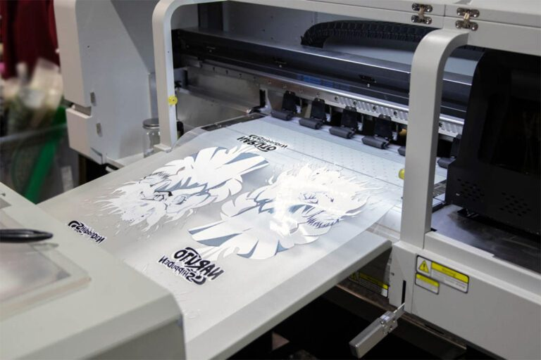

Printing Methods For Corporate T-Shirts
In the corporate world, apparel is a moving billboard. Whether it's for a tech conference, a team-building retreat, or a daily uniform, the quality of the print reflects the quality of the brand. For decision-makers and owners, choosing the right method is a balance of aesthetics, durability, and cost.

1. Direct-to-Film (DTF) Printing
Recommended for: Multi-color Logos & Versatility
DTF is currently revolutionizing corporate apparel. It involves printing designs onto a special film which is then heat-transferred onto the garment. It works seamlessly across cotton, polyester, and blends.
- The Benefit: Exceptional detail and color vibrancy that holds up well over dozens of washes.
- The ROI: Excellent for small-to-medium runs (20-100 units) where multiple colors would make other methods too expensive.
Tip: Use DTF when your logo has gradients, shadows, or more than four distinct colors.
2. Screen Printing (Plastisol)
Recommended for: Large Events & Bulk Orders
The traditional powerhouse of the industry. Screen printing uses stencils to push ink onto the fabric. While it has higher setup costs, the unit price drops significantly as volume increases.
- The Benefit: Unbeatable durability and a "classic" look that most people associate with high-quality merch.
- The ROI: This is the most cost-effective choice for orders exceeding 100 units (e.g., annual general meetings or large-scale promotional giveaways).

3. Computerized Embroidery
Recommended for: Premium Branding & Executive Wear
Embroidery uses high-speed industrial machines to stitch your logo directly into the fabric. It offers a 3D texture that printing cannot replicate.
- The Benefit: It conveys authority and professional longevity. It is virtually indestructible.
- The ROI: Higher cost per unit, but adds significant perceived value to Polo shirts and jackets for client-facing teams.
4. Sublimation Printing
Recommended for: Performance Wear & Active Teams
Sublimation dyes the fabric itself rather than sitting on top. This is restricted to polyester materials.
- The Benefit: The garment remains 100% breathable. The print will never crack, peel, or fade.
- The ROI: Best for corporate marathons, sports jerseys, or high-performance technical gear.
Method Comparison At-A-Glance
| Method | Ideal Quantity | Durability | Complexity Level |
|---|---|---|---|
| DTF | 5-100 | High | High (Full Color) |
| Screen Print | 100+ | Very High | Low (Solid Colors) |
| Embroidery | Any | Highest | Medium (Text/Logos) |
| Sublimation | Any | Highest | High (Full Color) |
Conclusion: Your brand deserves to be represented with precision. Selecting a printing method depends on your volume, the complexity of your logo, and the intended use of the garment. Choose wisely to ensure your team wears your brand with pride.